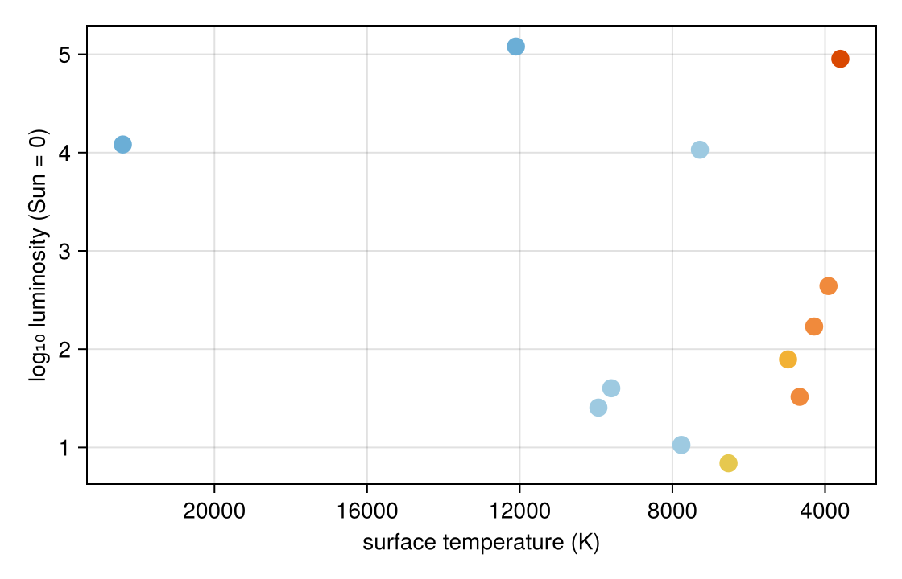
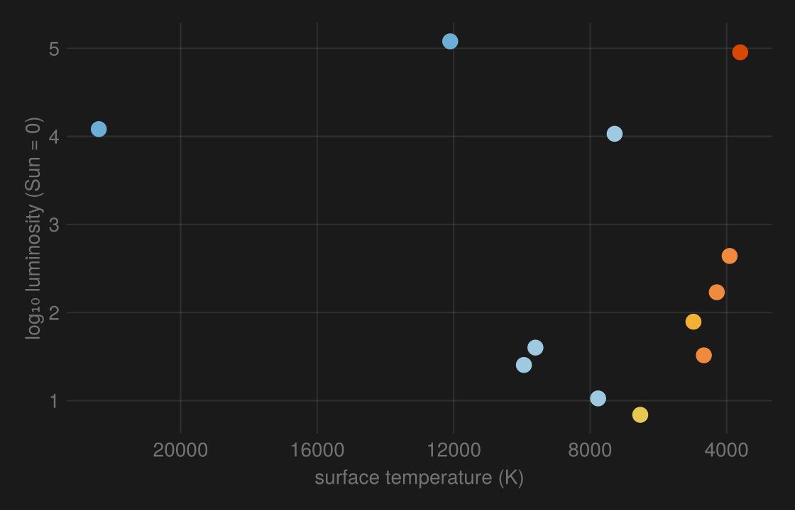

Tooltips
Hover over a mark and a tooltip appears above it with the mark's data. For each interactable, you choose the default table, your own template, or no tooltip. The chart below plots twelve bright stars by temperature and luminosity, and each star's tooltip gives its name in bold, its type, and its distance:
Notebook as text
Hover over a star to see its name, type and distance. Click one and the last cell names it.
begin
fig2, sc2 = hr_diagram()
tips = interactables(sc2; payloads = info, tooltip = masque"<b>$(name)</b><br>$(type)<br>$(dist) light years")
nothing
end@bind pick masque(fig2, tips; bind = sc2)
isnothing(pick) ? "click a star" : "$(pick.name) is a $(pick.type) star"click a starThe default tooltip
Start with the data each tooltip should show. Here each star gets a payload with its name, type and distance, and hr_diagram draws the chart:
Notebook as text
begin
stars = [
(name = "Sirius", type = "A1V", teff = 9940, lum = 25.4, dist = 8.6),
(name = "Canopus", type = "A9II", teff = 7280, lum = 10700.0, dist = 310.0),
(name = "Arcturus", type = "K1.5III", teff = 4286, lum = 170.0, dist = 36.7),
(name = "Vega", type = "A0V", teff = 9602, lum = 40.0, dist = 25.0),
(name = "Capella", type = "G8III", teff = 4970, lum = 78.7, dist = 42.9),
(name = "Rigel", type = "B8Ia", teff = 12100, lum = 1.2e5, dist = 860.0),
(name = "Procyon", type = "F5IV", teff = 6530, lum = 6.9, dist = 11.5),
(name = "Betelgeuse", type = "M1Ia", teff = 3600, lum = 9.0e4, dist = 548.0),
(name = "Altair", type = "A7V", teff = 7765, lum = 10.6, dist = 16.7),
(name = "Aldebaran", type = "K5III", teff = 3910, lum = 439.0, dist = 65.3),
(name = "Spica", type = "B1V", teff = 22400, lum = 12100.0, dist = 250.0),
(name = "Pollux", type = "K0III", teff = 4666, lum = 32.7, dist = 33.8),
]
spectral = Dict(
'B' => "#6baed6", 'A' => "#9ecae1", 'F' => "#e6c84f",
'G' => "#f2b134", 'K' => "#f08a3c", 'M' => "#d94801",
)
info = [(; name = s.name, type = s.type, dist = s.dist) for s in stars]
nothing
endfunction hr_diagram()
fig = Figure(size = (560, 360))
ax = Axis(
fig[1, 1]; xreversed = true, xticks = 4000:4000:20000, xtickformat = "{:.0f}",
xlabel = "surface temperature (K)", ylabel = "log₁₀ luminosity (Sun = 0)",
)
sc = scatter!(
ax, [s.teff for s in stars], log10.([s.lum for s in stars]);
color = [spectral[s.type[1]] for s in stars], markersize = 16,
)
return fig, sc
end;Pass the payloads without tooltip, and the tooltip is a small table of their fields, followed by the star's x and y (How Masque works says how the two combine):
Notebook as text
Hover over a star to see its fields.
@bind pick masque(fig, interactables(sc; payloads = info))
Without payloads, a scatter's tooltip shows the point's index, x, and y. On a categorical or date axis, x and y in the tooltip and in the clicked mark's event are text: the category's label, such as "b", or the date or time you plotted, such as "2024-01-02", "2024-01-01T01:00:00", or "01:00:00".
Hovering a line from lines!, stairs!, series!, or scatterlines! adds x and y of the point you plotted nearest the pointer along the line. In a template you can also use i, that point's position in the line's data, so $(i) is 3 over xs[3], ys[3]. A click on a line picks that point once you name the line in bind; see What each mark returns. A line on an Axis3 shows only its payload.
Numbers show up to four significant figures, so 0.30000000000000004 reads 0.3 and 2.71828 reads 2.718. Whole numbers show in full. To show more or fewer figures, pass tooltip_sigdigits to masque:
@bind sel masque(fig; tooltip_sigdigits = 6)The @bind value keeps every digit; only the tooltip is rounded.
Two interactables work differently. A legend entry shows no tooltip by default, because its label is already next to the swatch. To add one, pass a template, as Legend shows. A SliceInteractable shows the series values at the pointer instead of a payload.
Write a template
A template is a masque"..." string, passed as tooltip, like the one in the figure cell at the top of this page. Each $(field) is replaced by that field's value for the star under the pointer, and the rest is shown as written:
| In the template | Becomes |
|---|---|
$(field) | the payload's field, a number rounded as in the default tooltip |
$(field:spec) | the same, formatted with a d3-format spec: :, adds thousands separators, :.2f gives two decimals, :.1% a percentage |
\$ | a literal dollar sign |
| anything else | copied into the tooltip as HTML, so <b> and <br> work |
A $(field) can only name a payload field, not an expression such as $(dist / 3.26), so to show a computed value, put it in the payload:
info = [
(name = "Sirius", parsecs = round(8.6 / 3.26; digits = 1)),
(name = "Vega", parsecs = round(25.0 / 3.26; digits = 1)),
]To turn tooltips off, pass tooltip = false. The hover highlight and clicks keep working.
Template errors
A template Masque cannot read, such as one with an expression like $(pop + 1), an unclosed $(, or a format spec d3 does not know, raises a TemplateValidationError when its cell runs.
A template that names a field the payload does not have raises an ArgumentError when masque runs, and the message lists the payload's fields and suggests the closest match. This check needs named-tuple payloads: with a DataFrame or Dict, a misspelled field can show up as a blank in the tooltip, so hover once after you write the template.
HTML in payload values
Avoid putting HTML in your payload values, because the tooltip shows the tags as plain text instead of rendering them. To make something bold, use the template instead:
# The tooltip shows "<b>Lyon</b>", tags and all
cities = [(city = "<b>Lyon</b>", pop = 522_250)]
# The tooltip shows "Lyon" in bold
cities = [(city = "Lyon", pop = 522_250)]
tooltip = masque"<b>$(city)</b>"Also avoid links built from your data, such as <a href="$(url)">, unless you trust every URL in it: the link goes wherever the data says.
Where the tooltip appears
The tooltip sits above the hovered mark. Near the figure's edges it can reach past the figure onto the page, and it moves below the mark or inward only at the edge of the browser window. Axis readouts, boxes, and other interactions without a single mark show their tooltip at the pointer.
Dark figures
A dark figure gets a dark tooltip, even on a light page, because the tooltip follows the figure's backgroundcolor rather than the browser or system setting. This is the same chart drawn with Makie's theme_dark():
Notebook as text
Hover over a star to see its tooltip on the dark figure.
fig, sc = with_theme(hr_diagram, theme_dark());@bind pick masque(fig, interactables(sc; payloads = info, tooltip = masque"<b>$(name)</b><br>$(type)<br>$(dist) light years"))
Border color
When Masque knows a mark's color, its tooltip gets a 3px border in that color. The color comes from:
scatter!'scolor=, for the layermasquebuilds for a scatter, as in every example on this page, or when you pass theScatteritself toPointInteractable- the
colors=keyword, when you pass positions instead of the plot - a legend entry's swatch
Without a known color, the border is a plain 1px line.
To change the tooltip's background, text color, font, or corner radius for a whole widget, pass tooltipstyle to masque, or set the --masque-tip-* CSS properties on the page. See Tooltip styling. To change the color and width of highlights and the selection, pass overlaystyle; see Overlay styling.